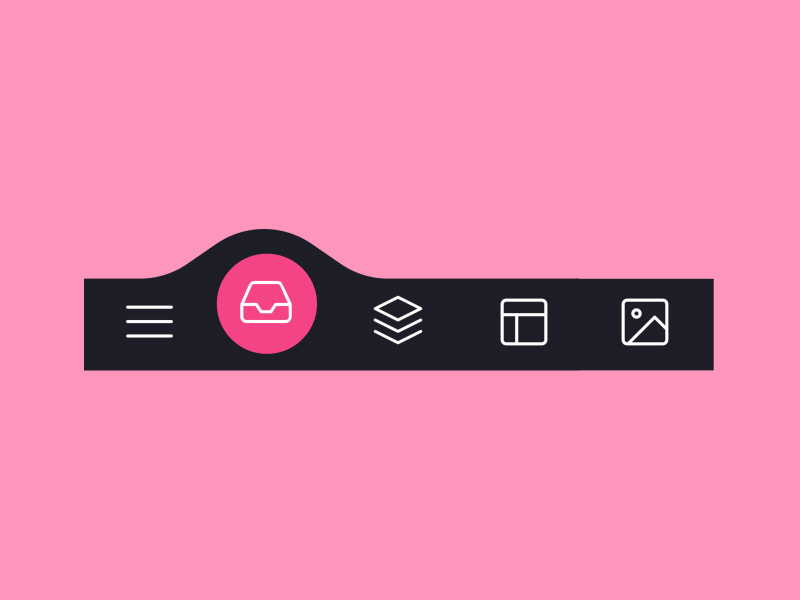

Секреты юзабилити: как превратить посетителей в фанатов вашего сайта
Задумывались ли вы, почему одни сайты притягивают, как магнит, а другие отталкивают, заставляя посетителей бежать? Ответ прост: юзабилити! Это не просто модное слово, а реальный инструмент, способный радикально изменить судьбу вашего онлайн-бизнеса. Представьте, что каждый клик на вашем сайте – это монета, которую либо зарабатываете, либо теряете. И зачастую, причиной этих потерь становится… плохое юзабилити.
Но что такое юзабилити на самом деле? Это не просто красивая картинка или модный дизайн. Это **способность вашего сайта быть удобным, понятным и эффективным для пользователя**. Это значит, что посетитель должен легко найти нужную информацию, быстро совершить покупку, без проблем зарегистрироваться или выполнить любое другое целевое действие.
Почему юзабилити так важно?
Представьте себя на месте посетителя, попавшего на сайт, где:
- Навигация запутанная и непонятная.
- Информация разбросана хаотично.
- Формы регистрации сложные и требовательные.
- Кнопки не работают или не видны.
Что вы сделаете? Скорее всего, закроете вкладку и уйдете к конкурентам, у которых все "проще и удобнее". И это закономерно! В современном мире, где выбор огромный, люди ценят свое время и не готовы тратить его на "борьбу" с недружелюбным сайтом.
Хорошее юзабилити = Лояльные клиенты + Рост конверсии + Увеличение прибыли
Это не просто слова, это проверенный факт. Инвестируя в юзабилити, вы инвестируете в свой успех.
Как же улучшить юзабилити своего сайта и превратить посетителей в фанатов?
Вот несколько ключевых моментов, на которые стоит обратить внимание:
- Простота и ясность: Сделайте свой сайт максимально простым и понятным. Избегайте сложных терминов и перегруженности информацией. Используйте простой язык, понятные заголовки и подзаголовки.
- Интуитивная навигация: Пользователь должен с легкостью находить нужную информацию. Создайте четкую и логичную структуру сайта. Используйте "хлебные крошки", удобное меню и поиск. 
- Адаптивный дизайн: Ваш сайт должен отлично отображаться на любых устройствах: компьютерах, планшетах, смартфонах. Мобильный трафик растет с каждым днем, и игнорировать его – значит терять потенциальных клиентов.
- Скорость загрузки: Медленная загрузка сайта раздражает пользователей и негативно влияет на поисковую выдачу. Оптимизируйте изображения, используйте кэширование и другие способы ускорения загрузки.
- Читабельность: Убедитесь, что текст на вашем сайте легко читается. Используйте контрастные цвета, подходящий размер шрифта и достаточное межстрочное расстояние.
- Четкий призыв к действию (CTA): Сориентируйте пользователя, чего вы от него хотите. Используйте четкие и заметные кнопки с призывом к действию (например, "Купить сейчас", "Подписаться", "Узнать больше").
- Тестирование и анализ: Не бойтесь экспериментировать и анализировать поведение пользователей на вашем сайте. Используйте инструменты веб-аналитики (например, Google Analytics) для отслеживания трафика, поведения пользователей и конверсий. Проводите A/B тестирование для сравнения различных вариантов дизайна и контента.
Не останавливайтесь на достигнутом!
Юзабилити – это не разовая работа, а постоянный процесс. Регулярно анализируйте поведение пользователей на вашем сайте, собирайте обратную связь и вносите необходимые изменения. Следите за трендами в веб-дизайне и технологиях, чтобы ваш сайт всегда оставался современным и удобным для посетителей.
В заключение:
Помните, что юзабилити – это не просто "хорошо". Это – необходимость для выживания и процветания вашего онлайн-бизнеса. Инвестируйте в юзабилити, и вы увидите, как ваши посетители превращаются в лояльных фанатов, а ваш бизнес – в успешное и прибыльное предприятие. Перестаньте терять "монеты" с каждым кликом и начните строить сайт, который будет приносить вам прибыль и радовать ваших пользователей!